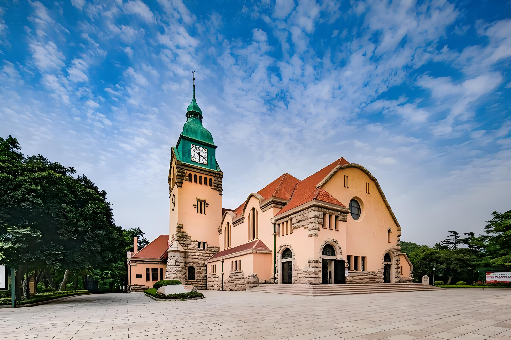

Standing as a masterpiece of Gothic architecture in East Asia, St. Nicholas Church, also known as the Zhanqiao Church, was built in 1903 by German missionaries. Its twin bell towers rise 60 meters above street level, making it one of the most recognizable landmarks in Qingdao.
The church was named after Saint Nicholas, the patron saint of sailors, fitting for a church located near the bustling harbor. The exterior features red brick walls, green copper roofs, and elaborate stone carvings that showcase exceptional European craftsmanship from over a century ago.
Inside, the vaulted ceilings and stained glass windows create a serene atmosphere. The church has been carefully preserved and remains an active place of worship while also serving as a museum of religious art and history.
← Back to Home